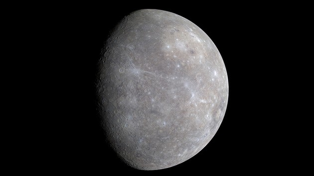
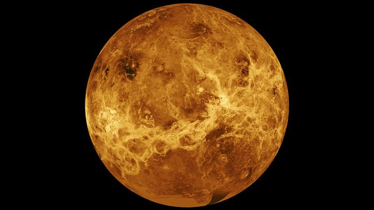
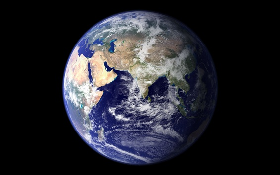
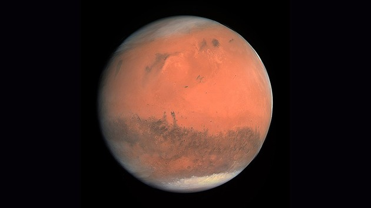
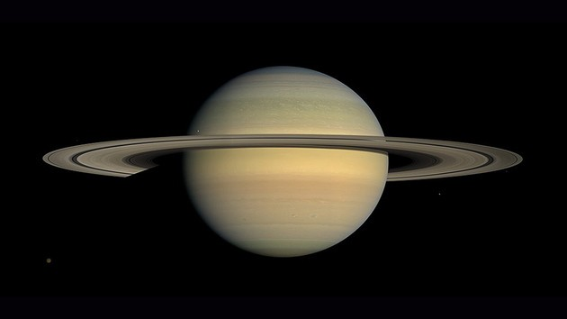

Mussum Ipsum, cacilds vidis litro abertis. Atirei o pau no gatis, per gatis num morreus. Suco de cevadiss, é um leite divinis, qui tem lupuliz, matis, aguis e fermentis. Em pé sem cair, deitado sem dormir, sentado sem cochilar e fazendo pose. Mauris nec dolor in eros commodo tempor. Aenean aliquam molestie leo, vitae iaculis nisl.
Leite de capivaris, leite de mula manquis sem cabeça. Sapien in monti palavris qui num significa nadis i pareci latim. Praesent vel viverra nisi. Mauris aliquet nunc non turpis scelerisque, eget. Manduma pindureta quium dia nois paga.
Tá deprimidis, eu conheço uma cachacis que pode alegrar sua vidis. Todo mundo vê os porris que eu tomo, mas ninguém vê os tombis que eu levo! Admodum accumsan disputationi eu sit. Vide electram sadipscing et per. Interagi no mé, cursus quis, vehicula ac nisi.
Mussum Ipsum, cacilds vidis litro abertis. Atirei o pau no gatis, per gatis num morreus. Suco de cevadiss, é um leite divinis, qui tem lupuliz, matis, aguis e fermentis. Em pé sem cair, deitado sem dormir, sentado sem cochilar e fazendo pose. Mauris nec dolor in eros commodo tempor. Aenean aliquam molestie leo, vitae iaculis nisl.
Leite de capivaris, leite de mula manquis sem cabeça. Sapien in monti palavris qui num significa nadis i pareci latim. Praesent vel viverra nisi. Mauris aliquet nunc non turpis scelerisque, eget. Manduma pindureta quium dia nois paga.
Tá deprimidis, eu conheço uma cachacis que pode alegrar sua vidis. Todo mundo vê os porris que eu tomo, mas ninguém vê os tombis que eu levo! Admodum accumsan disputationi eu sit. Vide electram sadipscing et per. Interagi no mé, cursus quis, vehicula ac nisi.
Mussum Ipsum, cacilds vidis litro abertis. Atirei o pau no gatis, per gatis num morreus. Suco de cevadiss, é um leite divinis, qui tem lupuliz, matis, aguis e fermentis. Em pé sem cair, deitado sem dormir, sentado sem cochilar e fazendo pose. Mauris nec dolor in eros commodo tempor. Aenean aliquam molestie leo, vitae iaculis nisl.
Leite de capivaris, leite de mula manquis sem cabeça. Sapien in monti palavris qui num significa nadis i pareci latim. Praesent vel viverra nisi. Mauris aliquet nunc non turpis scelerisque, eget. Manduma pindureta quium dia nois paga.
Tá deprimidis, eu conheço uma cachacis que pode alegrar sua vidis. Todo mundo vê os porris que eu tomo, mas ninguém vê os tombis que eu levo! Admodum accumsan disputationi eu sit. Vide electram sadipscing et per. Interagi no mé, cursus quis, vehicula ac nisi.
| Mercúrio | Vênus | Terra | Marte | Júpiter | Saturno | Urano | Netuno | |
|  |  |  |  | |
 | |
||
| Distância média do Sol | 57,9 | 108 | 149 | 228 | 778 | 1427 | 2870 | 4497 |
| Período de Translação | 88 d | 224,7 d | 365 d | 687 d | 11,8 a | 29,4 a | 84,0 a | 164,8a |
| Período de Rotação | 56,6 d | >> 243 d | 23,9 h | 24,5 h | 9,5h | 10 h | >> >> 16 h | 18 h |
| Diâmetro equatorial (Km) | 4878 | 12000 | 12 756 | 6787 | 142 800 | 120 600 | 51 800 | 49100 |
| Massa (Unidade = 1) | 0,055 | 0,81 | 1,0 | 0,1 | 317,8 | 95,1 | 14,5 | 17,2 |
| Temperatura Superfície (Temperatura °C) | -170 a 430 | 464 | 15 | -40 | -120 | -180 | -210 | -220 |
| Densidade média água = 1g/cm3 | 5,4 | 5,2 | 5,5 | 3,9 | 1,3 | 0,6 | 1,1 | 1,7 |
| N° de satélites naturais | 0 | 0 | 1 | 2 | 63 | 47 | 27 | 13 |
| a - anos; d - Dias; Movimento retrógrado; >> >> - Movimento retrógrado aparente; | ||||||||
|---|---|---|---|---|---|---|---|---|